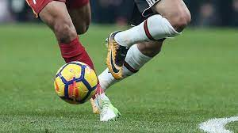

Football

Football is the most popular sport in Iraq. Today, it is not uncommon to find many Iraqi villages having their own football teams.] The Iraq national football team were the 2007 AFC Asian Cup Champions after defeating Saudi Arabia in the final, held in Jakarta, Indonesia. In 2006, Iraq reached the football final of the 2006 Asian Games in Doha, Qatar, after defeating former FIFA World Cup semi-finalists South Korea and eventually finished as runners-up, winning silver. The football tournament at the 2004 Summer Olympics in Athens, Greece, saw Iraq finish in fourth place, with the Italy national football team claiming bronze from a single goal.
The Iraqi Football Association is the governing body of football in Iraq, controlling the Iraq national football team and the Iraqi Premier League (also known as Dawri Al-Nokba). It was founded in 1948, and has been a member of FIFA since 1950, and the Asian Football Confederation since 1971.
Some of Iraq's top clubs include Al-Shorta, Al-Quwa Al-Jawiya, Al-Zawraa, Erbil SC, Duhok SC, Al Talaba and Najaf FC. While most athletes in Iraq are men, the country has already opened to female playing soccer, basketball, and volleyball. Recently, for instance, Iraq fielded its first national women's soccer team.
Basketball

Basketball is a popular sport in Iraq. There are at least two leagues, the Iraq Basketball Association, the country's professional organization, runs a number of adult and youth leagues, and the Iraqi Premier League, for elite players.